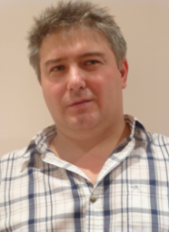

| Name | Bio |
|---|---|
Alexia Moliotsias Coach |
Ms. Moliotsias is very excited to be acting as one of the coaches for the Ctrl-Z team. Ms. Moliotsias is currently a grade 6 Science teacher at Bayview Glen and is coaching an FLL team for the third time. Ms. Moliotsias has an Electrical Engineering Degree from the University of Toronto and completed her Bachelor of Education at the Ontario Institute for Studies in Education (OISE). In her spare time, she enjoys reading, live theatre, film festivals and of course playing with LEGO. |
Alexander Mark Coach |
Mr. Mark is currently one of the three coaches of the FLL robotics team, Ctrl-Z from Bayview Glen School. Prior to having this position, he was a member of the Ctrl-Z team for 4 years. During his time in FLL, he had the opportunity to compete in 2 FLL World Championships in St. Louis, an International Open in Toronto, and a North American Open Championship in LEGOLAND, California. Being in FLL has taught Mr. Mark to better public speak and to teach students more effectively which he hopes to apply to help Ctrl-Z succeed this season. Outside of robotics, he likes to play badminton, Scrabble, bike with his friends and play with LEGO. |
|  Justin borromeo Coach |
Justin is one of Ctrl-Z’s coaches and is currently a Grade 12 student at Bayview Glen. As a member of Ctrl-Z from 2008-2014, he competed in two World Festivals and two International Opens. After his 2014 retirement from FLL, he became the coach of Gryphonbots, coaching them to a 3rd place finish at the Ontario East Provincials Championship. This season, Justin looks forward to coaching Ctrl-Z and helping each team member achieve their own goals. Aside from coaching Ctrl-Z, Justin spends his spare time playing sports (like volleyball and tennis), instructing skiing and reading. |
Christopher Alexiev Coach |